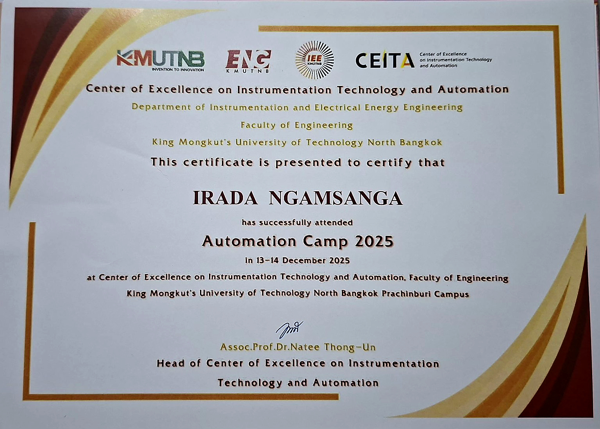
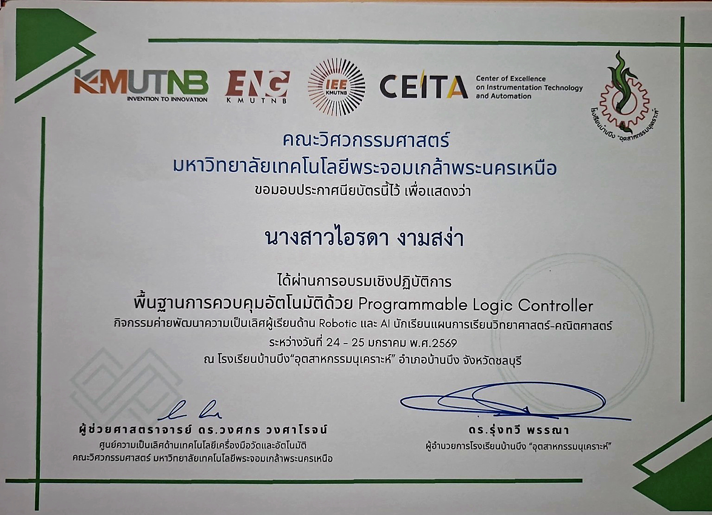
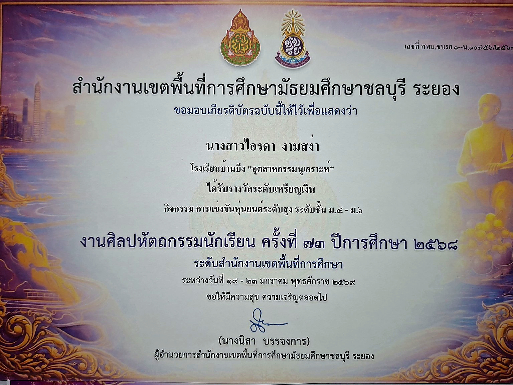
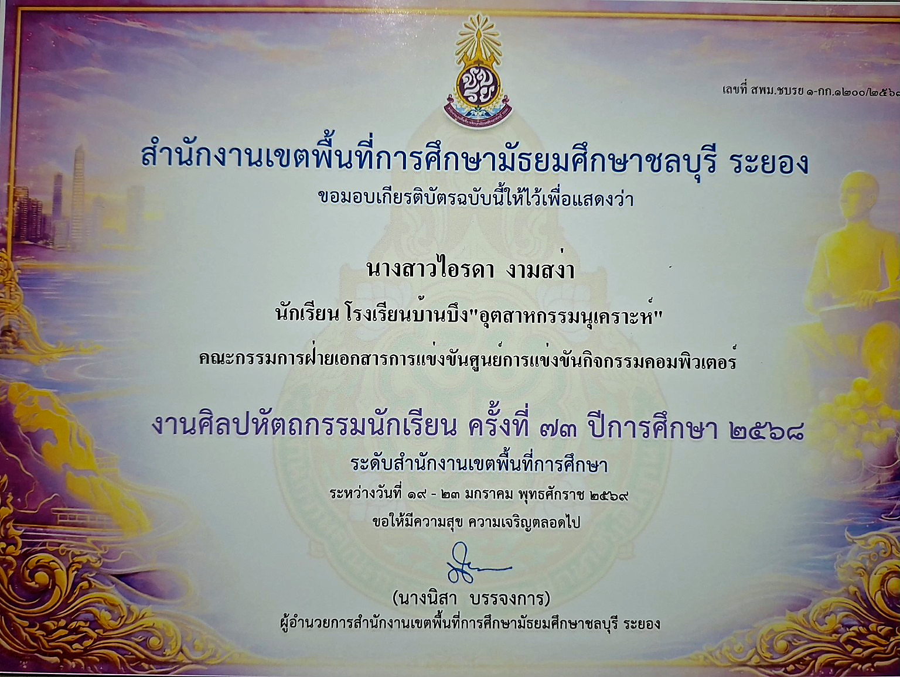
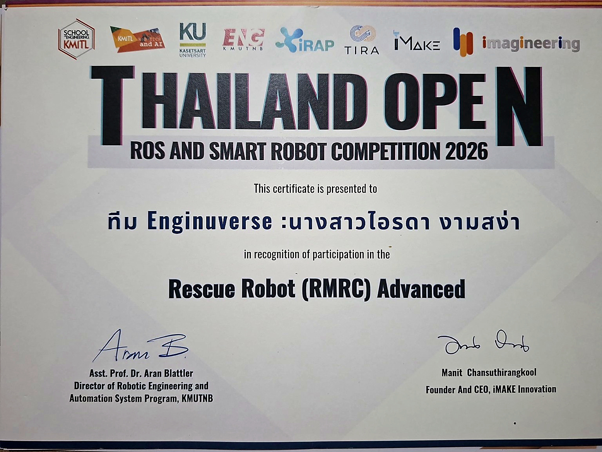

กิจกรรมที่เข้าร่วม

ได้เข้าร่วมกิจกรรม Automation Camp 2025 ได้เรียนรู้เกี่ยวกับระบบอัตโนมัติและเครื่องมือวัด พร้อมพัฒนาทักษะการคิดและการแก้ปัญหาจากกิจกรรมต่าง ๆ

ได้เข้าร่วมการอบรมเชิงปฏิบัติการพื้นฐานการควบคุมอัตโนมัติด้วย PLC ซึ่งทำให้ได้เรียนรู้หลักการทำงานของระบบควบคุมอัตโนมัติและได้สัมผัสพื้นฐานด้านเทคโนโลยี Robotic และ AI เพื่อนำความรู้ไปต่อยอดในการศึกษาด้านวิศวกรรมและระบบอัตโนมัติ

ได้รับรางวัลระดับเหรียญเงินจากการแข่งขันหุ่นยนต์ระดับสูง ระดับชั้นมัธยมศึกษาปีที่ 4–6 ในงานศิลปหัตถกรรมนักเรียน ครั้งที่ 73 ระดับสำนักงานเขตพื้นที่การศึกษามัธยมศึกษาชลบุรี ระยอง ซึ่งเป็นประสบการณ์ที่ได้พัฒนาทักษะด้านหุ่นยนต์ การแก้ปัญหา การทำงานร่วมกับผู้อื่น และการประยุกต์ใช้ความรู้ทางเทคโนโลยี

ได้มีส่วนร่วมในงานศิลปหัตถกรรมนักเรียน ครั้งที่ 73 โดยทำหน้าที่เป็นคณะกรรมการฝ่ายเอกสารการแข่งขันกิจกรรมคอมพิวเตอร์ในระดับสำนักงานเขตพื้นที่การศึกษา ทำให้ได้ฝึกความรับผิดชอบ การจัดการเอกสาร และการทำงานร่วมกับผู้อื่นในกิจกรรมด้านคอมพิวเตอร์

เข้าร่วมการแข่งขัน Thailand Open ROS and Smart Robot Competition 2026 ในประเภท Rescue Robot (RMRC) Advanced ซึ่งเป็นการแข่งขันด้านหุ่นยนต์กู้ภัย ทำให้ได้เรียนรู้และพัฒนาทักษะด้านหุ่นยนต์ ระบบอัตโนมัติ การทำงานเป็นทีม และการแก้ไขปัญหาเฉพาะหน้า